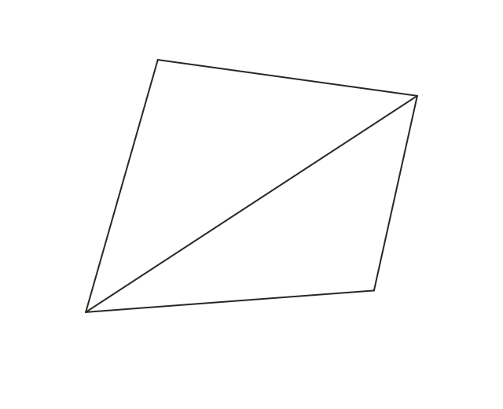
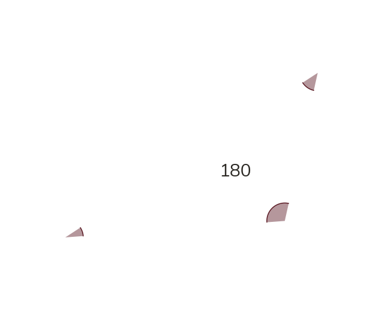
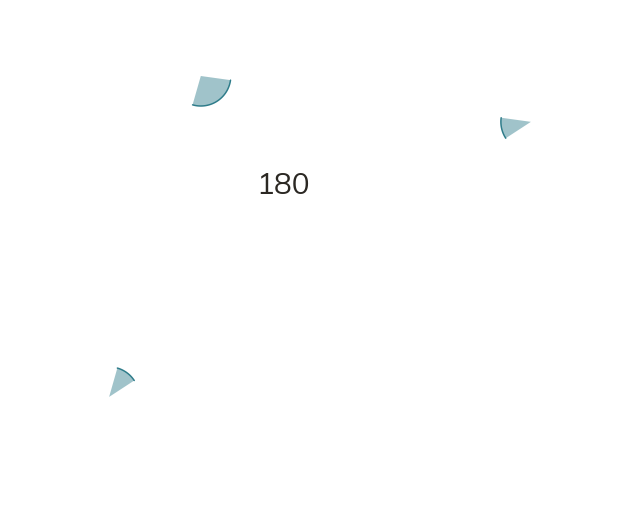
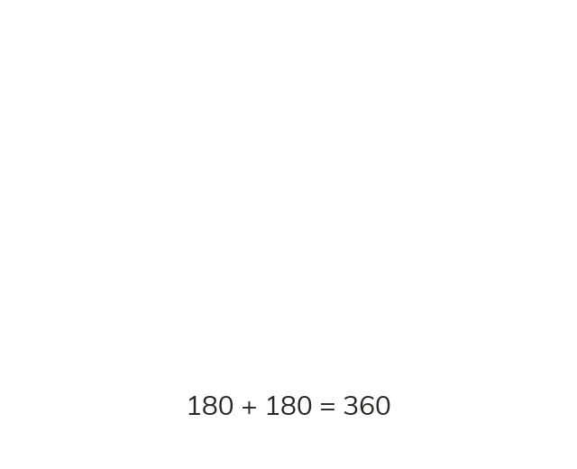

The 360 sum
The four angles inside any quadrilateral sum to 360°. One diagonal splits it into two triangles. Two triangles of 180° each make 360°.
The four angles inside any quadrilateral sum to 360°. This follows directly from splitting the quadrilateral into two triangles with a single diagonal: each triangle's angles sum to 180°, and together the two triangles' angles make up all four of the quadrilateral's angles, so 180+180=360.